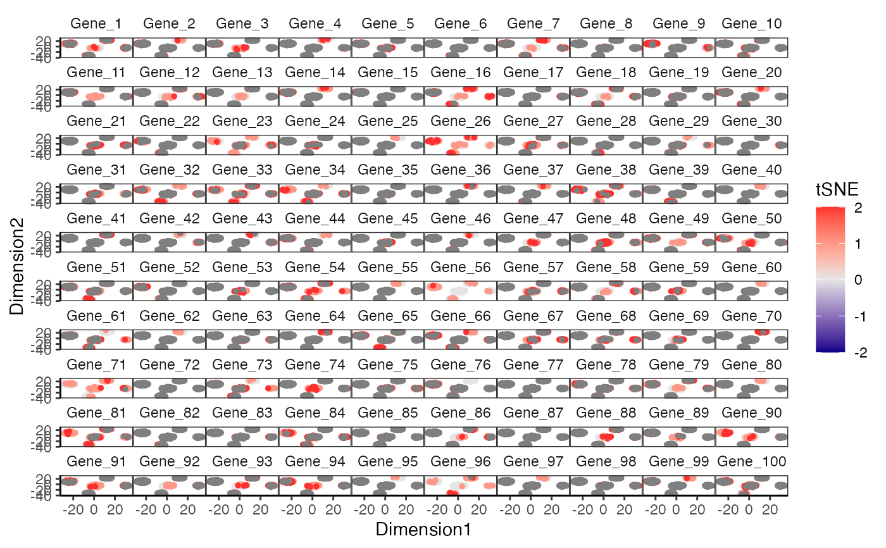

Creates a scatterplot given two dimensions from a data dimension reduction tool (e.g tSNE) output.
plotDimReduceGrid(
x,
reducedDimName,
dim1 = NULL,
dim2 = NULL,
useAssay = "counts",
altExpName = "featureSubset",
size = 1,
xlab = "Dimension_1",
ylab = "Dimension_2",
limits = c(-2, 2),
colorLow = "blue4",
colorMid = "grey90",
colorHigh = "firebrick1",
midpoint = 0,
varLabel = NULL,
ncol = NULL,
headers = NULL,
decreasing = FALSE
)
# S4 method for SingleCellExperiment
plotDimReduceGrid(
x,
reducedDimName,
dim1 = NULL,
dim2 = NULL,
useAssay = "counts",
altExpName = "featureSubset",
size = 1,
xlab = "Dimension_1",
ylab = "Dimension_2",
limits = c(-2, 2),
colorLow = "blue4",
colorMid = "grey90",
colorHigh = "firebrick1",
midpoint = 0,
varLabel = NULL,
ncol = NULL,
headers = NULL,
decreasing = FALSE
)
# S4 method for ANY
plotDimReduceGrid(
x,
dim1,
dim2,
size = 1,
xlab = "Dimension_1",
ylab = "Dimension_2",
limits = c(-2, 2),
colorLow = "blue4",
colorMid = "grey90",
colorHigh = "firebrick1",
midpoint = 0,
varLabel = NULL,
ncol = NULL,
headers = NULL,
decreasing = FALSE
)Numeric matrix or a SingleCellExperiment object
with the matrix located in the assay slot under useAssay. Each
row of the matrix will be plotted as a separate facet.
The name of the dimension reduction slot in
reducedDimNames(x) if x is a
SingleCellExperiment object. Ignored if both dim1 and
dim2 are set.
Numeric vector. Second dimension from data dimension reduction output.
Numeric vector. Second dimension from data dimension reduction output.
A string specifying which assay
slot to use if x is a
SingleCellExperiment object. Default "counts".
The name for the altExp slot to use. Default "featureSubset".
Numeric. Sets size of point on plot. Default 1.
Character vector. Label for the x-axis. Default 'Dimension_1'.
Character vector. Label for the y-axis. Default 'Dimension_2'.
Passed to scale_colour_gradient2. The range of color scale.
Character. A color available from `colors()`. The color will be used to signify the lowest values on the scale. Default "blue4".
Character. A color available from `colors()`. The color will be used to signify the midpoint on the scale. Default "grey90".
Character. A color available from `colors()`. The color will be used to signify the highest values on the scale. Default "firebrick1".
Numeric. The value indicating the midpoint of the
diverging color scheme. If NULL, defaults to the mean
with 10 percent of values trimmed. Default 0.
Character vector. Title for the color legend.
Integer. Passed to facet_wrap. Specify the number of columns for facet wrap.
Character vector. If `NULL`, the corresponding rownames are used as labels. Otherwise, these headers are used to label the genes.
logical. Specifies the order of plotting the points.
If FALSE, the points will be plotted in increasing order where
the points with largest values will be on top. TRUE otherwise.
If NULL, no sorting is performed. Points will be plotted in their
current order in x. Default FALSE.
The plot as a ggplot object
data(sceCeldaCG)
sce <- celdaTsne(sceCeldaCG)
plotDimReduceGrid(x = sce,
reducedDimName = "celda_tSNE",
xlab = "Dimension1",
ylab = "Dimension2",
varLabel = "tSNE")
library(SingleCellExperiment)
data(sceCeldaCG)
sce <- celdaTsne(sceCeldaCG)
plotDimReduceGrid(x = counts(sce),
dim1 = reducedDim(altExp(sce), "celda_tSNE")[, 1],
dim2 = reducedDim(altExp(sce), "celda_tSNE")[, 2],
xlab = "Dimension1",
ylab = "Dimension2",
varLabel = "tSNE")
